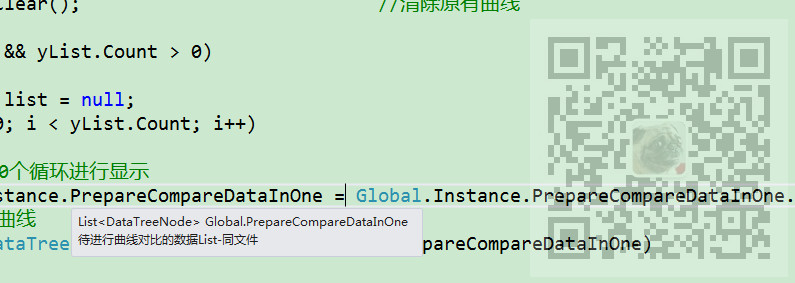
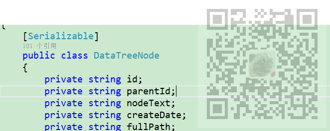

原文出处:本文由博客园博主霸道流氓提供。
原文连接:https://www.cnblogs.com/badaoliumangqizhi/p/11847317.html
原文连接:https://www.cnblogs.com/badaoliumangqizhi/p/11847317.html
场景
有一个对象的list，每个对象有唯一的属性Id，并且是从1递增，现在要根据此Id属性进行截取。

其中DataTreeNode

实现
Global.Instance.PrepareCompareDataInOne = Global.Instance.PrepareCompareDataInOne.Where(p => (int.Parse(p.Id) < 100)).ToList();
这样就可以截取前99个实体类，但是使用Lambda表达式返回的是IEnumerable类型，所以需要在转为list。
因为其Id属性为string ，所以需要转换为int去进行比较。